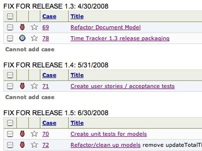

Time Tracker Development Progress

Time Tracker: A big push forward in project planning, refactoring and testing
Lots of good work today! My next Time Tracker work day is Wed, Apr 2 at 5:30pm PDT. Work will continue on refactoring.
User Support (0.52 hrs)
I reviewed several of the emails from the mailing list (from last summer), and linked them to feature requests in the issue tracker.
Project Planning (0.88 hrs)
I started scheduling time when I will work on Time Tracker. I plan to do development work three hours each week.
Refactor Document Model (2.67 hrs)
I did a lot of cleanup after the main refactoring to a Document-Based architecture. The main window now loads, displays and closes correctly. The next step is to connect the models to the NSArrayControllers-- I still need to learn the appropriate way to do this.
Create user stories / acceptance tests (3 mins)
I started a specifications document that lists all the features that need to be working before a Time Tracker release is made. (specs.txt)
Friday, March 28, 2008
